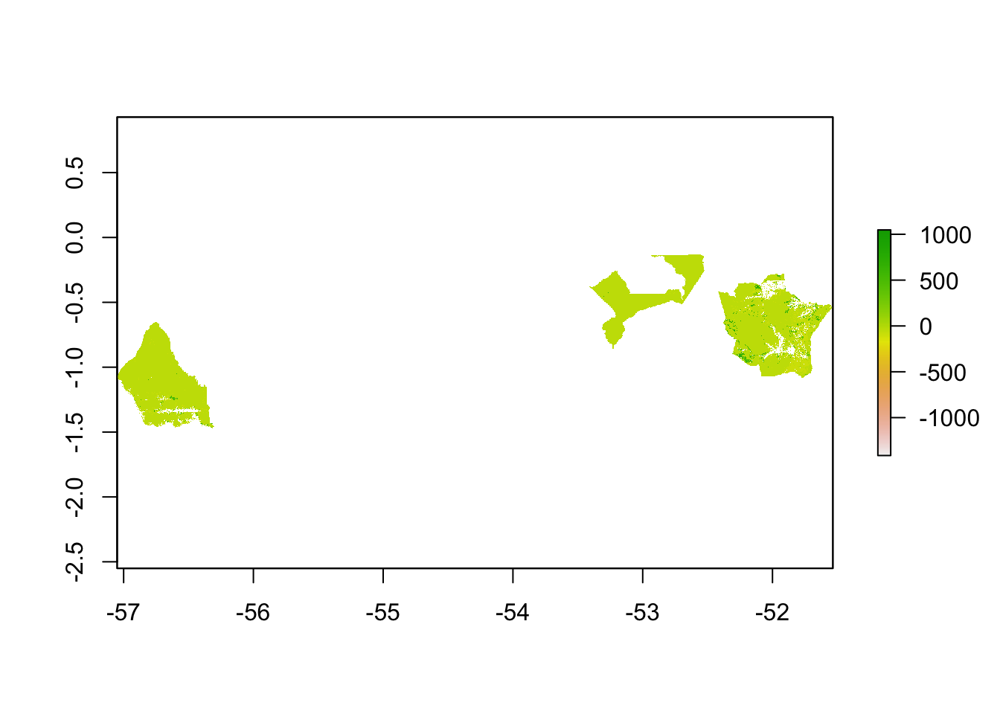

Net Forest Carbon Flux
Johannes Schielein, Om Bhandari
3/5/2021
Last updated: 2021-03-11
Checks: 5 2
Knit directory: mapme.protectedareas/
This reproducible R Markdown analysis was created with workflowr (version 1.6.2). The Checks tab describes the reproducibility checks that were applied when the results were created. The Past versions tab lists the development history.
The R Markdown file has unstaged changes. To know which version of the R Markdown file created these results, you’ll want to first commit it to the Git repo. If you’re still working on the analysis, you can ignore this warning. When you’re finished, you can run wflow_publish to commit the R Markdown file and build the HTML.
Great job! The global environment was empty. Objects defined in the global environment can affect the analysis in your R Markdown file in unknown ways. For reproduciblity it’s best to always run the code in an empty environment.
The command set.seed(20210305) was run prior to running the code in the R Markdown file. Setting a seed ensures that any results that rely on randomness, e.g. subsampling or permutations, are reproducible.
Great job! Recording the operating system, R version, and package versions is critical for reproducibility.
Nice! There were no cached chunks for this analysis, so you can be confident that you successfully produced the results during this run.
Using absolute paths to the files within your workflowr project makes it difficult for you and others to run your code on a different machine. Change the absolute path(s) below to the suggested relative path(s) to make your code more reproducible.
| absolute | relative |
|---|---|
| /home/ombhandari/shared/Om/mapme.protectedareas/ | . |
Great! You are using Git for version control. Tracking code development and connecting the code version to the results is critical for reproducibility.
The results in this page were generated with repository version a73d7fa. See the Past versions tab to see a history of the changes made to the R Markdown and HTML files.
Note that you need to be careful to ensure that all relevant files for the analysis have been committed to Git prior to generating the results (you can use wflow_publish or wflow_git_commit). workflowr only checks the R Markdown file, but you know if there are other scripts or data files that it depends on. Below is the status of the Git repository when the results were generated:
Ignored files:
Ignored: .Rproj.user/
Ignored: mapme.protectedareas.Rproj
Ignored: renv/library/
Ignored: renv/staging/
Unstaged changes:
Modified: analysis/carbon-flux.rmd
Modified: analysis/index.Rmd
Note that any generated files, e.g. HTML, png, CSS, etc., are not included in this status report because it is ok for generated content to have uncommitted changes.
These are the previous versions of the repository in which changes were made to the R Markdown (analysis/carbon-flux.rmd) and HTML (docs/carbon-flux.html) files. If you’ve configured a remote Git repository (see ?wflow_git_remote), click on the hyperlinks in the table below to view the files as they were in that past version.
| File | Version | Author | Date | Message |
|---|---|---|---|---|
| Rmd | 611bd97 | Ohm-Np | 2021-03-05 | create net carbon flux rmd |
| html | 611bd97 | Ohm-Np | 2021-03-05 | create net carbon flux rmd |
Introduction
Forest Carbon Emissions are GHG emissions that originate from forest cover loss and subsequent Above Ground Biomass and Below Ground Biomass loss. Net forest carbon flux represents the net exchange of carbon between forests and the atmosphere. Forest act as both a Source and Sink for Carbon.
To calculate zonal statistics for net forest carbon flux that changed between 2001 to 2019, enlisted is the required processing routine:
- Download raster data of the desired grid using function
get_net_carbon_flux - Fetch country level wdpa data from library
wdparand clean the data - Select desired wdpa polygon from wdpa data
- Clip the carbon_flux raster by the selected polygon to its extent
- Rasterize the selected polygon area
- Perform zonal statistics
Raster data preparation
At first you should link to the source functions to go through this routine.
source("code/carbon-flux.R")How to use the function?
- you can call the function
get_net_carbon_fluxby passing (lat, lon) arguments for eg. (“10S”, “050W”) or (“10N”, “020E”) - you should check the coordinates of your desired area and need to find out the grid under which interval of latitude and longitude does it fall
- or simply visit the GFW Dataset Portal to verify chosen grid coordinates
# call the function to download raster for the country Brazil
# returned values is in 'Mg_CO2_ha-1'
get_net_carbon_flux("00N", "060W")[1] "/tmp/RtmpxuUBmW/carbon_flux_00N_060W.tif"After successfully running this function, you can see that the raster file is stored in the temporary directory of R, which we can see above within double quote. For the next step, simply pass the returned temporary file path from the ‘callFunction’ chunk to the ‘loadRaster’ chunk so as to load the downloaded raster file.
# load the raster, view and plot the data
myRaster <- raster("/tmp/Rtmps0oMVx/carbon_flux_00N_060W.tif")
# view the data
myRasterclass : RasterLayer
dimensions : 40000, 40000, 1.6e+09 (nrow, ncol, ncell)
resolution : 0.00025, 0.00025 (x, y)
extent : -60, -50, -10, 0 (xmin, xmax, ymin, ymax)
crs : +proj=longlat +datum=WGS84 +no_defs
source : /tmp/Rtmps0oMVx/carbon_flux_00N_060W.tif
names : carbon_flux_00N_060W # plot the raster
plot(myRaster)
Polygon data preparation
Since we already prepared raster data for our analysis. Now, we will try to get the country level polygon data from wdpar package. wdpar is a library to interface to the World Database on Protected Areas (WDPA).
# fetch the raw data from wdpar of country Brazil - for other countries of your choice, simply provide the country name or the ISO name e.g. Gy for Guyana, COL for Colombia
br_raw_pa_data <- wdpa_fetch("Brazil")Since there are more than 3000 enlisted protected areas in Brazil, we want to have a look at the polygon data of: - Reserva Biologica Do Rio Trombetas - wdpaid 43 - Reserva Extrativista Rio Cajari - wdpaid 31776 - Estacao Ecologica Do Jari - wdpaid 4891
For this, we have to subset the country level polygon data to the pa level.
# subset three wdpa polygons
trombetas <- br_raw_pa_data[br_raw_pa_data$WDPAID == 43, ]
jari <- br_raw_pa_data[br_raw_pa_data$WDPAID == 4891, ]
cajari <- br_raw_pa_data[br_raw_pa_data$WDPAID == 31776, ]
# merge polygons into one file
bra <- rbind(trombetas, jari, cajari)The next immediate step would be to clean the fetched raw data. Cleaning is done so as to: - exclude protected areas that are not yet implemented - exclude protected areas with limited conservation value - replace missing data codes (e.g. “0”) with missing data values (i.e. NA) - replace protected areas represented as points with circular protected areas that correspond to their reported extent - repair any topological issues with the geometries - erase overlapping areas
# clean the data
brac <- wdpa_clean(bra)
# spatial
brac_sp <- as(brac, "Spatial")Crop the Carbon Flux Raster
As we completed raster and vector data preparation, the next step would be to clip the raster layer by the selected shapefile polygon; its extent and mask layer.
# extent preparation
myExtent <- spTransform(brac_sp, CRS(proj4string(myRaster)))
# plot the extent that will be used to crop the raster layer
plot(myExtent)
# crop raster using polygon extent
myCrop <- crop(myRaster, myExtent)
# plot the data - shows the raster after getting cropped by the extent of polygon
plot(myCrop)
# crop raster using polygon mask
myMask <- mask(myCrop, myExtent)
# plot the data - shows the raster after getting cropped by the polygon mask
plot(myMask)
Rasterize the polygon layer
To compute the zonal statistics, it is necessary to rasterize the polygon layer. We need to pass the extent layer and the mask layer to the rasterize function.
# rasterize
r <- rasterize(myExtent, myMask, myExtent$WDPAID, background=NA, update=FALSE, touches=is.lines(myExtent), cover=FALSE)Compute zonal statistics
A zonal statistics operation is one that calculates statistics on cell values of a raster (a value raster) within the zones defined by another dataset [ArcGIS definition].
# zonal stats
zstats <- zonal(myMask, r, fun='sum', na.rm=T)
zstats zone sum
43 43 -192709050
4891 4891 -123947679
31776 31776 -136209414By mathematical definition, net forest carbon flux is the difference between average annual gross emissions and average annual gross removals. Hence, positive result denotes forests as net sources of carbon and negative results denotes forests as net sinks of carbon.
For all the three polygons we considered, we get the negative result. That means forest in these three Protected Areas act as the net sinks of carbon.
sessionInfo()R version 4.0.3 (2020-10-10)
Platform: x86_64-pc-linux-gnu (64-bit)
Running under: Ubuntu 20.04 LTS
Matrix products: default
BLAS/LAPACK: /usr/lib/x86_64-linux-gnu/openblas-pthread/libopenblasp-r0.3.8.so
locale:
[1] LC_CTYPE=en_US.UTF-8 LC_NUMERIC=C
[3] LC_TIME=en_US.UTF-8 LC_COLLATE=en_US.UTF-8
[5] LC_MONETARY=en_US.UTF-8 LC_MESSAGES=C
[7] LC_PAPER=en_US.UTF-8 LC_NAME=C
[9] LC_ADDRESS=C LC_TELEPHONE=C
[11] LC_MEASUREMENT=en_US.UTF-8 LC_IDENTIFICATION=C
attached base packages:
[1] stats graphics grDevices utils datasets methods base
other attached packages:
[1] ggplot2_3.3.3 wdpar_1.0.6 sf_0.9-7 raster_3.4-5 tmap_3.3
[6] rgdal_1.5-23 sp_1.4-5 terra_1.0-10 rmarkdown_2.7
loaded via a namespace (and not attached):
[1] httr_1.4.2 sass_0.3.1 jsonlite_1.7.2 viridisLite_0.3.0
[5] bslib_0.2.4 assertthat_0.2.1 countrycode_1.2.0 highr_0.8
[9] yaml_2.2.1 pillar_1.5.0 lattice_0.20-41 glue_1.4.2
[13] digest_0.6.27 RColorBrewer_1.1-2 promises_1.2.0.1 colorspace_2.0-0
[17] htmltools_0.5.1.1 httpuv_1.5.5 XML_3.99-0.5 pkgconfig_2.0.3
[21] stars_0.5-1 purrr_0.3.4 scales_1.1.1 whisker_0.4
[25] later_1.1.0.1 git2r_0.28.0 tibble_3.1.0 generics_0.1.0
[29] ellipsis_0.3.1 withr_2.4.1 leafsync_0.1.0 magrittr_2.0.1
[33] crayon_1.4.1 evaluate_0.14 fs_1.5.0 fansi_0.4.2
[37] lwgeom_0.2-5 class_7.3-17 tools_4.0.3 lifecycle_1.0.0
[41] stringr_1.4.0 munsell_0.5.0 compiler_4.0.3 jquerylib_0.1.3
[45] e1071_1.7-4 rlang_0.4.10 classInt_0.4-3 units_0.7-0
[49] grid_4.0.3 tmaptools_3.1-1 dichromat_2.0-0 rappdirs_0.3.3
[53] htmlwidgets_1.5.3 crosstalk_1.1.1 leafem_0.1.3 base64enc_0.1-3
[57] gtable_0.3.0 codetools_0.2-16 curl_4.3 abind_1.4-5
[61] DBI_1.1.1 R6_2.5.0 knitr_1.31 dplyr_1.0.2
[65] utf8_1.1.4 workflowr_1.6.2 rprojroot_2.0.2 KernSmooth_2.23-17
[69] stringi_1.5.3 parallel_4.0.3 Rcpp_1.0.6 vctrs_0.3.6
[73] png_0.1-7 leaflet_2.0.4.1 tidyselect_1.1.0 xfun_0.21